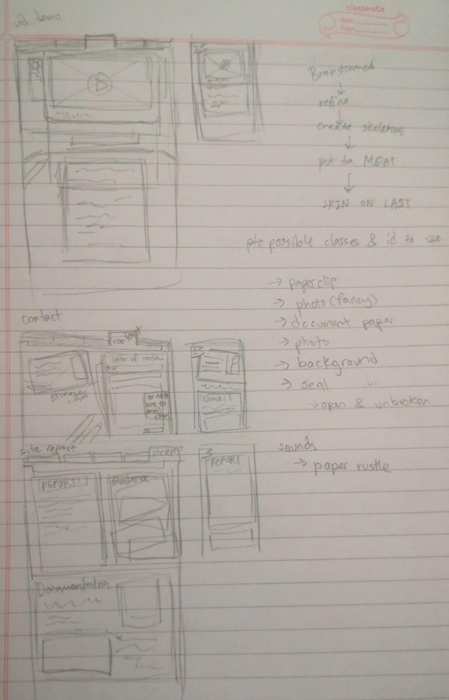
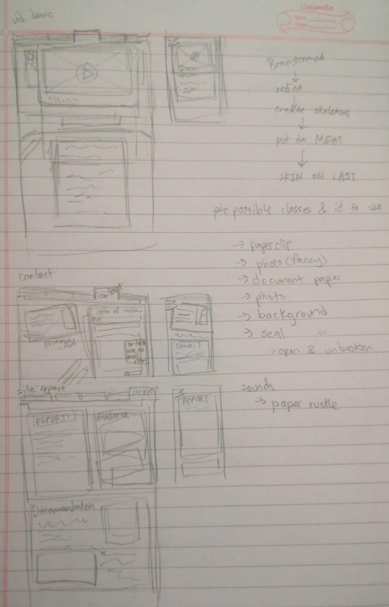

Formal Report
This area is delicated to a formal report writing, regarding what I have learned as I created this website from scratch. Currently, I am adding on for resubmission as I have failed this assignment.
As defined by the brief, I will discuss, reflective experience of the module, explain and explore the design decisions,include validation reports of every file created along with screenshots and the URL to video demonstration report. Additionally, I will add any code that is not mine as screen shots and links to where I got the source code.
Reflection of module expereince
My experience with the module has not too easy because I was unfamilair with css and how HTML functioned. It did not help that the help provided, in terms of lessons and slides provided was not sufficient enough for me to understand what was going on. I had to refer to the internet mutliple times and read through documentations to understand what was going on. Although, I am guessing this is how things work, asking for help through the internet and seeing what works and what doesn't. Makes sense, as I have little to no experience.
While my module lecturer attempted to go through the assignment bit by bit, it was just not enough. It was limited and made me underestimate
Design decisions
The main theme I wanted my website to have was the feeling of report folders. Documents and papers all over. While papers are usually bright white, I did not want to strain viewer's eyes. Hence, why the main colours for the website is offwhite, leaning towards warmer tones. I will sparingly use other colours so that visitor's eyes will be drawn to that element first.
Validation reports
Here are the validation screenshots for:
- CSS
- index HTML page
- project HTML page
- videoDemo HTML page
- contact HTML page
- siteReport HTML page
URL to video demonstration
here is the link:
insert youtube linkSource code used:

Author: >>> w3docs
Logs with dates
This is a written report/log hybrid for the module, web development CSY1063 assignment 1. In this report, I will go through the design and thought process of making this website come to life. While in development, I will include logs and include milestones that I have set for myself during the planning phase. Below this section will have each updates done with dates
20 June 2024
Brainstorming phase
Initially, I had plans to first think of the theme and then try to build my website around it after deciding my website was going to be a personal blog/portfolio site. The first few themes were themes of duality, celestial bodies, endless sky, game styled shopkeeper and a vagabond with a carriage. Since I have an artistic background, I made a lot of pretty drawings here and there. I slowly realised that my ideas would be way too cluttered as it demanded heavy attention everywhere, which may be exhausting for the visitor. Not only that, translating my ideas into mobile would lose its meaning.
So I cut down the complexity and decided that sticking to a much more simple theme would be better. I decided that my website would have a dossier or an archive file sort of theme. An old detective TV show vibe, if I am really stretching. Basically, I wanted a top down view of record files being spread open. For mobile users, they will have the same thing but will have a bookmark ribbon to pull out the hidden menu for easier access. Visuals such as document, paper textures, old vHS player, actual business cards, paper clips and polaroid pictures.
A feature I wanted to add was something similar to light and dark modes, mainly why I wanted a dual theme going on. Thankfully, I can apply this to my selected theme. Light would be like sunlight, bright colours as its themes and the dark mode would have the same content, only that it would have a night appearance like an unlight room that only has sunset light coming through.
If I had extra time, I could even have a blacklight mode so that the visitor can try to find secret content with their mouse. For mobile users, they will spawn a torch light that they can drag around but they will have to find the torch first to be able to use it.
 

Planning phase
Features I wanted to implement are: Every website page has a special nav bar that will respectively darken or be on top to show the current viewed page. There is a day and night mode on every page. Additionally, for night mode, there is a blacklight mode that will ‘glow’ hidden content. Mobile users will be able to spawn in a blacklight torch from the menu bar and drag it around the site, similar to desktop users. Desktop users will have their cursors as the blacklight torch. The changes will be gradual and not instantaneous (like a timelapse)
Every polaroid photo can be "picked up" and zoomed in. Hovering over a polaroid photo will say, “View closer?” Mobile users will see a text that says to tap to view better.
1 July 2024
Trying to write for this site has been an interesting and fulfiling expereince. After being so used to seeing the front of a site, looking at the skeleton and trying to construct it by myself has opened my eyes to the tediious nautre of web development. This probably applies to many other learning curves, to be fair.
I have been struggling on how to start this project/site as it feels so daunting. Espically after the fact that I have little experience to HTML. Never made my own site by scratch. Where do I start? The grid? The template? Do I add the properties inside the html?
Thankfully, when I forced myself to sit down and start with the basics, everything sort of started to fall in place. Before starting with grids, I figured that just placing the bones down would make more sense. So I started with putting down The elements I want present on a site and worked my way from there.
Things like, Navigation bar, fake icon that I made, setting up the image sources. To aid with other things like tool tip and hover, I used the internet to make sure I knew what was going on.
Here's my silly icon I grabbed from an logo maker site.
So looking at this file through the web browser is making me cringe. I found a way to make the text more readable, by brute forcing it with double break tags. I will have to look up for a more elegant solution. For the text, I was planing to leave it as it is. Because I want the text to resize according to the viewer's browser. So I was planning to use CSS by placing id tags on it.
For my images. Since I don't want to clutter my files too much, I have been using Google drive to host the images. They all should be displaying correctly because I grabbed it directly from inspect element and I set the permissions to public. Please reach out if that is not the case.
That is all for my report for this day. It is surprising I managed to make so much and these have all been rambles of text.
4 July 2024
Currently I am trying to write up the basic building block for a caurosel
like gallery for my project html. I want it to be easily viewed in one
glance rather than it being all scrolled down into oblivion.
One method I found had something to do with layering a 'wrapper' around
multiple images. Turns out one usually used Javascript for it and I am a little
worried that it would be too much to do. I will attempt to do a Javascript-free
version and test it next to one made and powered with JavaScript.
I refered to these websites for guidance:
https://css-tricks.com/how-to-make-a-css-only-carousel/
https://codepen.io/trungvose/pen/EydyoL
https://wpdean.com/css-carousels/ so many cool ideas!!
I figure the images might slow the website's loading
speed so I am wondering if there is a way to compress images into preview
first. I came across interesting articles for it.
https://kinsta.com/blog/optimize-images-for-web/#choose-the-right-file-format
I managed to make a polaroid border in css but now there's a bit of floating
issues that I will have to correct.
https://stackoverflow.com/questions/7731310/text-in-border-css-html
Interesting stuff
I just found out I was supposed to be using the paragraph tag in this manner
I am struggling to wrangle the grid to function as it is breaking everything I am trying to do. I am also learning that having a todo list is probably more ideal because I am all over the place. It is starting to disorient me.
Apparently headers are meant to hold the nav bar, I have corrected it as such.
5 July 2024
I believe I should re-think what I am doing and properly outline what I want per website page. Everything feels way too cluttered out and the fact that the deadline looms closer, I have to pick up the pace. Although, thankfully, I am freed from my other modules so I can finally commit my complete energy to completing my ambitious project.
This is the outline that I have decided.
Supporting elements:
navigationdocument paper
sound
popup?
Index
transformfonts
image background maybe paper texture?
Portfolio
dossier_gallerydossier file
file
Vid_demo
media playervideo player Visual
dynamic background
Contact
business card
email_document/clip board
Site report
report_document (formal report)evidence pile
documentation
I had the option to use dialog tag but apparently it's a newer addition so the issue of backwards compatibility came up and I decided to use nesting with z-index to hopefully work.
21 September 2024
I have corrected the pages to all be valid but will have to fix the sizes of most media. Since validation does not allow values inside the tags, i will have to correct them from CSS. The goals for this version will be to:
- Validate all pages
- Correct and add more visuals to all pages
- Responsive design for each page, use of media query
- Implement hamburger icon
- Video demonstration with audio. Add video transcript at the page.
- Rewrite site report as requested.
For this day, I have validated all pages as of now. Fixed most pages from it and planned a bit on how the mobile version of the site should look like.
23 September 2024
Continued to fix the pages. Images were finally corrected for site report. Added a 'looking closer' feature when mouse hovers over the picture of interest. Finally validated CSS file after much trouble. Indivual transform properties were not recogised nor does only using 'translate' by itself works. The work around for it was to use "transform: translateX(number here) translateY(number here);" Which is valid AND works on the browsers as intended.
Now that the inital validation and corrected are completed, I will now proceed to attempt to wrangle the media qureies. For now, I have added starter text into the site report and started the base set-up for media queries. The colours are temporily, only meant to visual what query is active. I will have to figure out how to make the hamburger menu button. Looking through the internet, it seems people make clever use of the checkbox. If I were to implement this, I will have to rewrite the menu.
I am also considering if I should adjust the div elements to have their own scroll-box sizes relative to the website. Will text it out after I implement the hamburger menu.
27 September 2024
A few websites I have looked through to understand how to have a responsive menu.
It appears all of them uses checkboxes as the trigger for housing responsive menus. Since we aren't allowed to use javascript for this assignment, I will have to use this hack as well. The thrid website gives a lot of information that explains and covers a lot in great detail. A great read. To break down what I understand, it appears that input, check box is used along with label that can be the stand in button that responses or switches 'states' as intended. For this case, I want to have the menu collaspe vertically instead when the screen resolution is mobile size.
The main structure would be to have a 'nav' element housing 'input', 'label' and link elements inside. The label would be used to trigger the input tag. Then the elements will be controlled purely with CSS magic. With some trial and error, I was able to produce these results on a seperate file entirely.
I continued to struggle with trying to wangle with media query but have managed to understand it enough to make the website behave as intended. I have noticed some interesting behaviour from the website and the emulated mobile devices feature. They behave differently. Sometimes, the resizing of browser will be in opposite of the emulated mobile device screens.